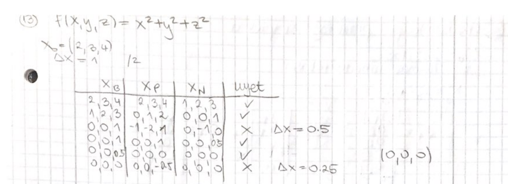

Kako bi došla do xn(2) = (0,0,1)?
Ako se za svaku os posebno pomičemo za +/- x (obrađujući osi u zadanom poretku), prvo bi imala (-1,1,2) i (1,1,2), ali za njih je jednaka vrijednost F(x) pa bi odabrala (-1,1,2) i od te točke dalje (-1,2,2) i (-1,0,2) itd. Zanima me kako da dođen do (0,0,1) tj kako uopće ne pomaknit x, nego samo y i z? Naravno da je za ovu fju minimum banalan pa jel se možda taj x samo zbog toga ostavi jednak 0?